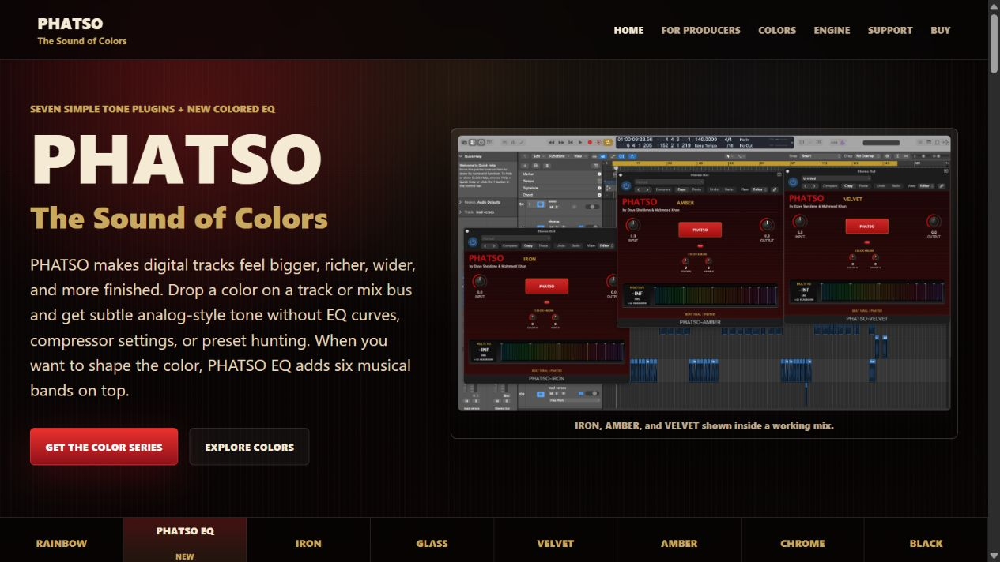

A BUSINESS IDEA BROUGHT TO LIFE
SSU Australia / SupperTable
A food-business idea built around branded local kitchens. We created websites and branding to bring it to life. SupperTable is the associated kitchens concept.
We can help with all three.
Starting a business? Have an idea for a website? Ready to find more customers? We make the next step simple. No technical knowledge needed.
Created by Mahmood Khan
Northern Rivers, NSW ↗ Working across Australia & online
Learn it. Build it. Grow it.
Choose one service, two, or all three.
01 / OUR THREE SERVICES
Here’s what you get, what it costs and how to get started. All prices are in Australian dollars.
02 / OUR WORK
Real websites and projects we’ve created and worked on. Take a look, then tell us what you have in mind.
A BUSINESS IDEA BROUGHT TO LIFE
A food-business idea built around branded local kitchens. We created websites and branding to bring it to life. SupperTable is the associated kitchens concept.

A WEBSITE WE BUILT AND HELP MANAGE
Music, videos, performances, news and creative projects brought together in one website.

A RADIO SHOW WE CREATED
We created the radio programme, its website and launch communications, then personally approached broadcasters, potential guests and organisations.

A WEBSITE FOR A LIVE-EVENT IDEA
A live-event idea with its own website and identity, bringing people together through conversation and shared experiences.

A MUSIC PRODUCT AND ONLINE SHOP
An original range of music-making tools, with branding, product information and an online shop.
OUR OWN SOFTWARE PROJECT
Our own software project to help research potential customers, write personal introductions and manage business conversations. Still in development.
03 / HOW WE REACHED PEOPLE
Here’s what happened when we used it ourselves. We researched people and organisations, learned about their work and emailed them personally. And people responded.
We created WORLD POP and gave it a website, a clear identity and a story.
We researched broadcasters, possible guests and organisations with a reason to be interested.
Each introduction explained why we were contacting that particular person.
We received replies, interview interest, introductions and invitations to discuss possibilities.
FOR WORLD POP
The station agreed to an initial Saturday programme slot. This is not a claim that a first broadcast has occurred.
A personal approach developed into an agreed Zoom discussion about potential artistic collaboration.
MORE WORLD POP EXAMPLES
A direct discussion with the national community radio distribution team, followed by submission of WORLD POP for consideration.
Its communications team confirmed that a relevant brand and sponsorship leader was happy to participate in an interview about music and advertising creativity.
FOR OTHER CREATIVE PROJECTS
A direct discussion about a proposed charity concert led to referral of the proposal to senior leadership for internal consideration.
An intercultural orchestral concept led to introductions and discussions with relevant academic and strategic-relations contacts.
These are examples from our founder’s own projects. These organisations are not presented as Build & Reach clients, sponsors or endorsers. Conversations and proposals do not imply contracted partnerships.
We research. We find a genuine connection. We write personally. And we start conversations. That’s the approach we’d bring to your business.
Outreach is conducted within applicable privacy and anti-spam requirements, using approved messaging and authorised client accounts.
04 / MEET MAHMOOD
I’ve spent much of my life creating music, producing projects, building ideas and connecting people.
More recently, I’ve built websites and AI-assisted tools for my own ventures, and used personal research and introductions to connect with broadcasters, organisations and creative partners.
Build & Reach brings those experiences together to help you create something of your own. Learn to build a website, have us build one, or get help reaching potential customers.
My creative career includes a multi-million-selling album collaboration with Nusrat Fateh Ali Khan, and ARIA and Billboard No. 1 chart achievements.
EVERY PROJECT STARTS WITH A CONVERSATION.
Tell us what you’re trying to achieve. No complicated process. Just tell us what you need.